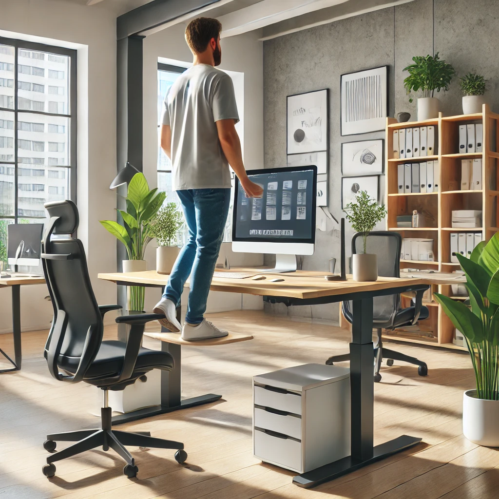

استراتيجيات للحد من التوتر المهني
تعرّف على أفضل الطرق للتعامل مع التوتر والقلق المتعلق بمستقبلك المهني. يوفر هذا المقال نصائح عملية وتقنيات مثبتة لمساعدتك في الحفاظ على صحتك النفسية وتحقيق التوازن بين العمل والحياة.
أسباب التوتر المهني

تتعدد أسباب التوتر المهني وتتنوع بين ضغوط العمل، وتحديات إدارة الوقت، والتوقعات العالية، والقلق بشأن المستقبل الوظيفي. من المهم التعرف على هذه الأسباب لتتمكن من معالجتها بفعالية.
استراتيجيات فعّالة للحد من التوتر
هناك العديد من الاستراتيجيات التي يمكن اتباعها للحد من التوتر المهني، مثل تنظيم الوقت بشكل أفضل، وممارسة التمارين الرياضية، والتواصل مع الآخرين، والحصول على الدعم النفسي عند الحاجة.
أهمية العناية بالصحة النفسية
العناية بالصحة النفسية لا تقل أهمية عن العناية بالصحة الجسدية. من خلال اتباع تقنيات الاسترخاء والتأمل، يمكنك تحسين صحتك النفسية والتعامل بشكل أفضل مع الضغوط اليومية.
في الختام، يعتبر التوتر المهني جزءًا لا مفر منه من الحياة العملية، ولكن من خلال اتباع الاستراتيجيات المناسبة، يمكنك التقليل من تأثيره والتمتع بحياة مهنية أكثر صحة وسعادة.